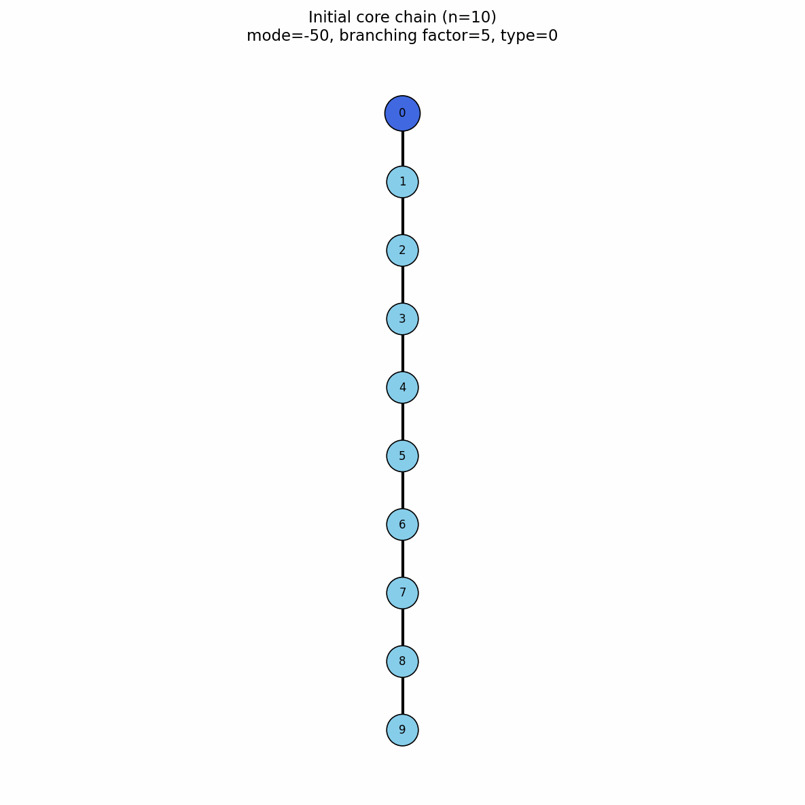
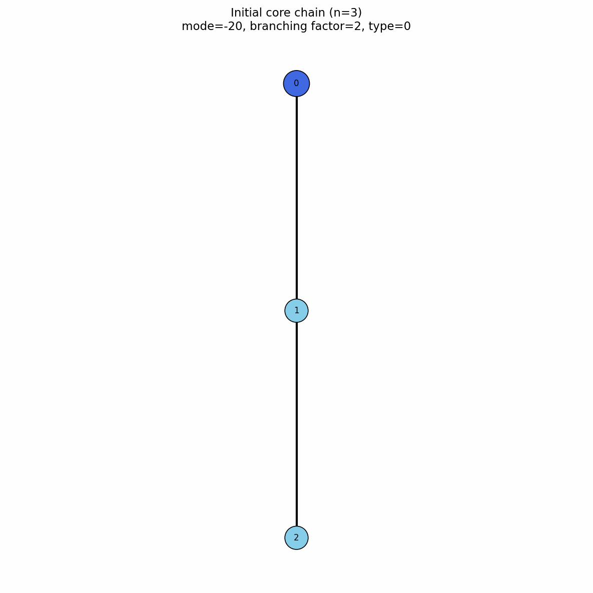

Model_type 0 - init_sc
This initialization is used for creating everything from simple homopolymer to stars, combs, gels and much more.
Chain defining parameters
chains int - number of chains in the system
chain_length int - length of a single polymer chain
n_branches int - number of branches on a single polymer chain (if branching is present)
branch_length int - length of a single branch (if branching is present)
Mode
mode int - mode of branching, this parameter directly influences grafting of branches onto the main polymer chain.
Example values for mode :
Random grafting
mode -1
grafts branches at random positions of the main chains
Dendrimer grafting
mode -2
grafts branches to create a dendrimer, this setting changes multiple parameters
chain_length int - length of the base chain. All additional branches originate from bead 0 of this chain.
branch_length - length of branches
Requirement
chain_length = branch_length + 1, note that first set of branches always contains one more branch than the branches originating from the remaining knots.
mode -int / 10 - the number of branches originating from a single knot, for simplicity we will call this bf as a short for branching factor
| Parameter | Example 1 | Example 2 |
|---|---|---|
| Representation |  |
 |
| Description | Incomplete dendrimer branching | Complete dendrimer branching |
chain_length |
10 |
3 |
branch_length |
9 |
2 |
b_f (mode / 10) |
5 |
2 |
mode |
-50 |
-20 |
{kind=link}
{kind=link}
Number of branches in a complete dendrimer
For a complete dendrimer, the total number of branches is
where:
- \(b_f\) is the branching factor,
- \(g\) is the number of complete generations,
- \(n_{\mathrm{branches}}\) is the total number of branches.
For example, when \(b_f=2\) and \(g=2\),
Parameters and preview for dendrimers can be calculated in our calculator below.
Dendrimer parameter calculator
—
Dendrimer structure preview
Change the parameters or press Generate.
Comb grafting
For branch \(i\), the grafting site on the backbone is
where \(k_0\) is the first grafting index, \(s\) is the spacing between grafting sites, and \(n\) is chain_length.
The mode parameter encodes both \(k_0\) and \(s\):
The values can be recovered as
and
For example, with \(n=20\), \(k_0=1\), and \(s=2\),
which gives the grafting indices
and
Comb polymer calculator
—
Comb structure preview
Change the parameters or press Generate.
Diamond gel grafting
Special case for mode > 0 is gel formation made by setting chains -1. The diamond gel consists of eight permanent branching nodes connected by 16 polymer arms. Four nodes form the inner set and four form the outer set, with every inner node connected to every outer node.
If each arm contains \(n_{\mathrm{arm}}\) internal beads, the total gel size is
where the first eight bead indices, \(0\) to \(7\), are the branching nodes.
The remaining beads,
form the internal parts of the 16 gel arms and can be used as grafting sites.
For grafting in comb mode, the attachment index is updated as
where
is the step between grafting sites.
The subtraction and addition of \(8\) ensure that grafts are attached only to arm beads and never to the eight gel junctions.
Diamond-gel grafting calculator
—
Gel-arm grafting preview
Loading calculator…